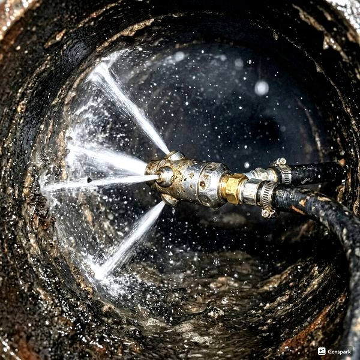
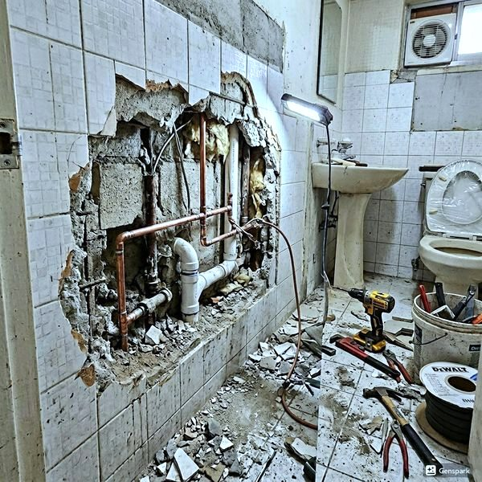
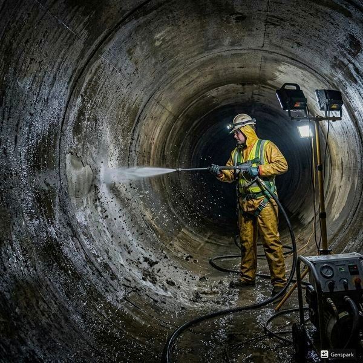

하수구막힘 수리 비용 안내 - 서비스별 가격 가이드
2026년 4월 12일 | 제우스시설관리
하수구가 막혔을 때 가장 궁금한 것은 비용입니다. 불투명한 가격은 불신을 낳고, 과도한 요금 청구에 대한 걱정을 만듭니다. 제우스시설관리는 현장 진단 후 정확한 견적을 먼저 안내하고, 고객 동의 후 작업합니다.

일반적인 하수구막힘 수리 비용 안내입니다. 싱크대 막힘 해결: 5만~15만원. 변기 막힘 해결: 5만~12만원. 세면대/샤워기 막힘 해결: 5만~10만원. 하수구 역류 해결: 10만~30만원. 증상의 심각도와 작업 난이도에 따라 차이가 있습니다.
비용이 달라지는 요인: ① 막힘의 위치(접근이 어려울수록 높음), ② 막힌 물질의 종류(기름때, 시멘트 등 고착물은 추가 작업 필요), ③ 배관 길이와 상태, ④ 야간/공휴일 작업 여부. 제우스시설관리는 출장비 0원, 미해결 시 비용 0원 정책을 시행합니다.

전문 장비별 비용 참고: 드레인 기계 사용(기본): 포함. 고압세척기 사용: 추가 5만~10만원. 내시경 카메라 진단: 무료(작업 시). 관로탐지기 진단: 상황에 따라 별도. 모든 비용은 작업 전 안내됩니다.

저렴한 가격만 강조하는 업체를 주의하세요. 현장에서 추가 비용을 요구하는 경우가 많습니다. 제우스시설관리는 견적 확정 후 추가 비용 없음을 보장합니다. 전화 상담만으로도 대략적인 비용을 안내받을 수 있습니다. 010-4406-1788